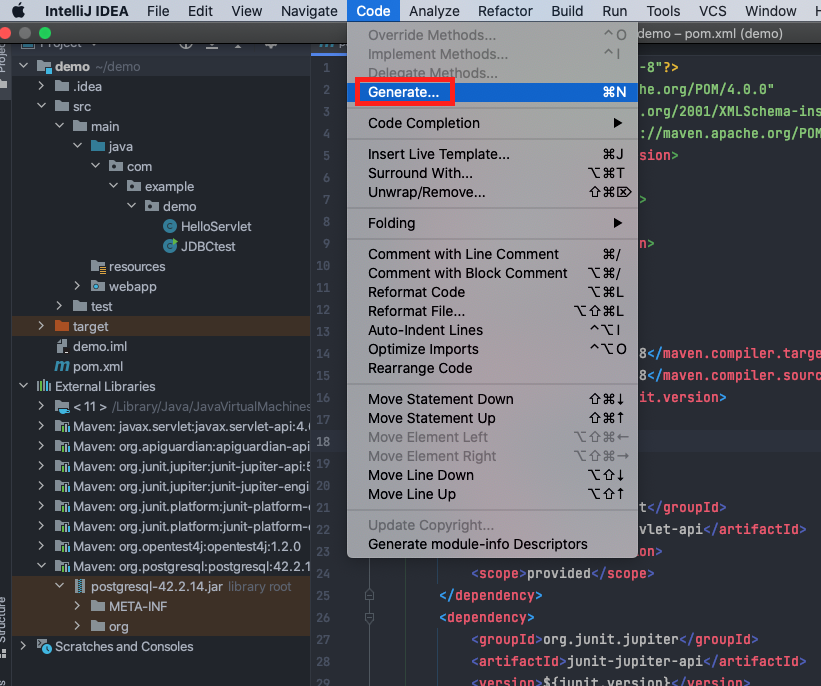
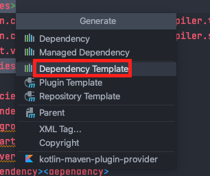
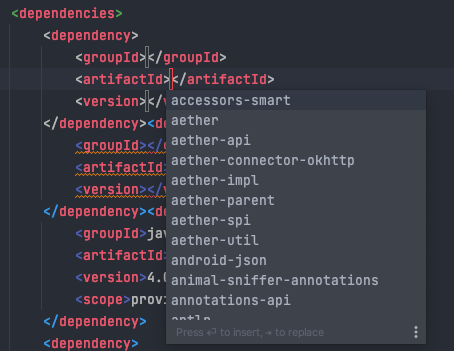
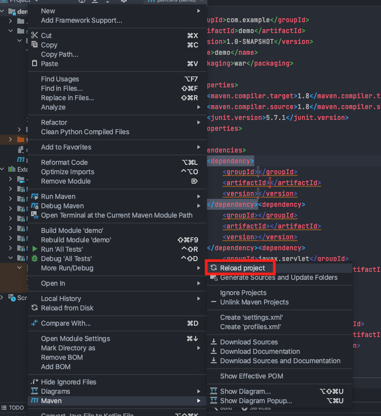
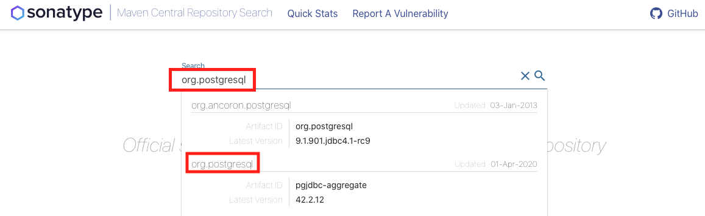
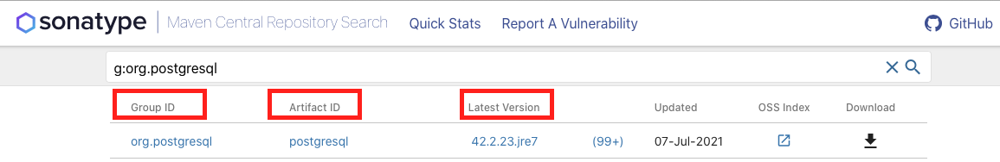

Introduction to Maven#
Introduction#
In the project, you will make use of Apache Maven.
Maven is a tool that is used for building and managing any Java-based project. It is a standard way to build projects and provides a clear definition of what the project consists of.
Why Maven is Used#
When developing an application, we face a number of challenges:
Adding JARs of project dependencies,
Creating the right project structure for servlets to execute, and
Building and deploying the application.
Maven solves all of these problems, it:
Generates documentation from source code,
Compiles source code,
Downloads project dependencies,
Packages compiled code into WAR, JAR or ZIP files, and
Installs the packaged code in a local or remote repository.
In doing so, it automates project builds and saves a countless amount of time.
Maven Project Structure#
Maven projects all have a common project structure. Having a common directory layout allows users familiar with one Maven project to immediately feel at home in another Maven project.
A Maven’s project structure looks like this:
├── pom.xml
├── src
│ └── main
│ ├── java
│ │ └── com
│ │ └── example
│ │ └── <project_name>
│ │ └── <file>.java
│ ├── test
│ ├── resources
│ │ └── images
│ │ └── <image>.jpg
│ └── webapp
│ ├── WEB-INF
│ │ └── web.xml
│ ├── <jsp>.jsp
│ └── jsp
│ └── <jsp>.jsp
The src directory contains all the source material for building the project, its site and so on. It contains a subdirectory for each type: main for the main build artifact, resources for images or other resources, text for unit tests, and webapp for the site.
POM File#
All Maven projects contain a project object model (POM) file - it is a one-stop-shop for all things concerning the project.
Maven builds a project using a standardised POM file and a set of plugins. As Maven uses a templated POM file, it means once you familiarise yourself with one Maven project, you know how all Maven projects build. This saves time when navigating many projects.
All the elements directly under the POM’s project element are:
POM File
<project xmlns="http://maven.apache.org/POM/4.0.0" xmlns:xsi="http://www.w3.org/2001/XMLSchema-instance"
xsi:schemaLocation="http://maven.apache.org/POM/4.0.0 https://maven.apache.org/xsd/maven-4.0.0.xsd">
<modelVersion>4.0.0</modelVersion>
<!-- The Basics -->
<groupId>...</groupId>
<artifactId>...</artifactId>
<version>...</version>
<packaging>...</packaging>
<dependencies>...</dependencies>
<parent>...</parent>
<dependencyManagement>...</dependencyManagement>
<modules>...</modules>
<properties>...</properties>
<!-- Build Settings -->
<build>...</build>
<reporting>...</reporting>
<!-- More Project Information -->
<name>...</name>
<description>...</description>
<url>...</url>
<inceptionYear>...</inceptionYear>
<licenses>...</licenses>
<organization>...</organization>
<developers>...</developers>
<contributors>...</contributors>
<!-- Environment Settings -->
<issueManagement>...</issueManagement>
<ciManagement>...</ciManagement>
<mailingLists>...</mailingLists>
<scm>...</scm>
<prerequisites>...</prerequisites>
<repositories>...</repositories>
<pluginRepositories>...</pluginRepositories>
<distributionManagement>...</distributionManagement>
<profiles>...</profiles>
</project>
A project’s POM file does not need to define all of these elements. At a bare minimum, it must define the following:
<project xmlns="http://maven.apache.org/POM/4.0.0" xmlns:xsi="http://www.w3.org/2001/XMLSchema-instance"
xsi:schemaLocation="http://maven.apache.org/POM/4.0.0 https://maven.apache.org/xsd/maven-4.0.0.xsd">
<modelVersion>4.0.0</modelVersion>
<groupId>org.codehaus.mojo</groupId>
<artifactId>my-project</artifactId>
<version>1.0</version>
</project>
Group ID#
The groupId is unique amongst an organisation or a project.
It defines where your project lives in the local Maven repository. For example, the project above has a groupId
of org.codehaus.mojo and so is accessible at .m2/repository/org/codehaus/mojo.
Artifact ID#
artifactId is the name the project is known by.
In addition, it further specifies where the project resides in the Maven repository. For example, the project above has
an artifactId of my-project - this means the project resides in
.m2/repository/org/codehaus/mojo/my-project.
Version#
The version number allows users to delineate versions of the same project. After each release, you might like to
iterate the version of your project allowing developers to know which project you are referring to.
Additionally, the version fully specifies the path to the project in the Maven repository. For example, the
above project is version 1.0 and so resides in .m2/repository/org/codehaus/mojo/my-project/1.0.
Packaging#
If you have created the web application using IntelliJ, the POM file will specify WAR packaging. WAR (Web Application Resource) files are used to package web applications to deploy them to servlets. WAR files have a pre-defined structure that must be followed:
├── META-INF
│ └── MANIFEST.MF
├── WEB-INF
│ ├── web.xml
│ └── jsp
│ └── helloWorld.jsp
├── classes
│ ├── static
│ ├── templates
│ └── application.properties
└── lib
WAR files also require a server to execute (unlike JARs which can be run from the command line and do not have an internal structure that must be followed).
Specifying the correct packaging is important as it defines the default list of goals which execute on each corresponding build lifecycle stage for a particular package structure. For example, the goals on WAR packaging are:
WAR Packaging Goals#
<phases>
<process-resources>
org.apache.maven.plugins:maven-resources-plugin:2.6:resources
</process-resources>
<compile>
org.apache.maven.plugins:maven-compiler-plugin:3.1:compile
</compile>
<process-test-resources>
org.apache.maven.plugins:maven-resources-plugin:2.6:testResources
</process-test-resources>
<test-compile>
org.apache.maven.plugins:maven-compiler-plugin:3.1:testCompile
</test-compile>
<test>
org.apache.maven.plugins:maven-surefire-plugin:2.12.4:test
</test>
<package>
org.apache.maven.plugins:maven-war-plugin:2.2:war
</package>
<install>
org.apache.maven.plugins:maven-install-plugin:2.4:install
</install>
<deploy>
org.apache.maven.plugins:maven-deploy-plugin:2.7:deploy
</deploy>
</phases>
A brief explanation of each goal:
process-resources: validate the project is correct and all necessary information is available.compile: compile the source code of the project.test: test the compiled source code using a suitable unit testing framework. These tests should not require the code be packaged or deployed.package: take the compiled code and package it in its distributable format, such as a JAR.install: install the package into the local repository, for use as a dependency in other projects locally.deploy: done in the build environment, copies the final package to the remote repository for sharing with other developers and projects.
Dependencies#
Dependency management is a core feature of Maven. The dependency management section is a mechanism for centralising dependency information. This feature is facilitated by reading the dependencies specified in the POM file.
For example, in the project we have specified a PostgreSQL dependency:
</dependencies>
<dependency>
<groupId>org.postgresql</groupId>
<artifactId>postgresql</artifactId>
<version>42.2.14</version>
</dependency>
</dependencies>
Maven downloads and links the dependencies on compilation, as well as on other goals that require them. As an added bonus, Maven brings in the dependencies of those dependencies (transitive dependencies), allowing your list to focus solely on the dependencies your project requires.
The dependencies in the POM file are copied as JARs from the central Maven repository into your computer’s local Maven repository.
Note
The Maven repository in most instances is created as a hidden directory on your computer. You should never need to
access it.
If you are on a Linux machine and did want to access the local Maven repository, open a file explorer window,
and hold shift + command + full stop to display hidden files and folders.
Then navigate to the Maven repository, which usually resides at: /<home_directory>/.m2
You can search for Maven dependencies is in the central Maven repository.
Adding a New Dependency in IntelliJ#
There are 2 ways you can install Maven dependencies in IntelliJ.
1. Install via IntelliJ Template
Note
Use this method if you know the artifactId, groupId, and version of the dependency you wish
to use.
Open your project in IntelliJ and select Code from the menu. Then select Generate:

Select Dependency Template:

A dependency template will be autogenerated in the POM file, and a pop-up will appear to allow you to search for dependencies:

You will need to specify groupId, artifactId, and version. If you do not know these, use method 2.
Once you add the dependency, right-click on a project folder and select Reload Project:

2. Install via Maven Central Repository
Navigate to Maven Central Repository. As an example, we will search for the PostgreSQL JAR. Search and select the JAR you want:

When you select the JAR you want, it will display the groupId, artifactId, and version:

Open your project in IntelliJ and select Code from the menu. Then select Generate:
Select Dependency Template:
A dependency template will be autogenerated. Now enter the groupId, artifactId, and
version you retrieved from the Maven Central Repository (above):
Once you add the dependency, right-click on a project folder and select Reload Project:
Maven Compile#
When you build a project, the project is compiled and a target directory is created; the target directory
is used to house all output of the build.
├── target
│ ├── classes
│ │ └── com
│ │ └── example
│ │ └── demo
│ │ └── <java>.class
│ ├── <artifactId>-<version>-SNAPSHOT
│ │ ├── META-INF
│ │ │ └── MANIFEST.MF
│ │ ├── WEB-INF
│ │ │ ├── classes
│ │ │ │ └── com
│ │ │ │ └── example
│ │ │ │ └── <artifactId>
│ │ │ │ └── <java>.class
│ │ │ ├── lib // all dependencies in the POM file are created here
│ │ │ │ └── <jar>.jar
│ │ │ └── web.xml
│ │ └── index.jsp
│ ├── <artifactId>-<version>-SNAPSHOT.war
│ └── generated-sources
│ └── annotations
The target/<artifactId>-<version>-SNAPSHOT.war file created contains all the necessary resources to run
the project (as discussed above). When you execute run in TomCat (or push to Render), the WAR file is exploded.
Extra Resources